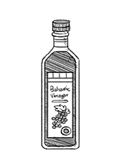

balsamic vinegar
Balsamic vinegar, or aceto balsamico is a dark, concentrated, flavoured vinegar from Italy. It is made wholly, or in part from grape must. True balsamic vinegar is rich with a complex flavor that is both sweet and sour. The name "aceto balsamico" isn't regulated, but there are 3 in existence that are: Aceto Balsamic Tradizionale di Modena, Aceto Balsamico Tradizionale di Reggio Emilia and Aceto Balsamico di Modena.
The two traditional varieties are made from a reduction of pressed Trebbiano and Lambrusco grapes that are aged for many years in wooden barrels (for a minimum of 12yrs), produced exclusively in the province of Modena or the Emilia region around it. Aceto Balsamico di Modena is also made from grape must, but it is blended with wine vinegar, and imitates the traditional product.